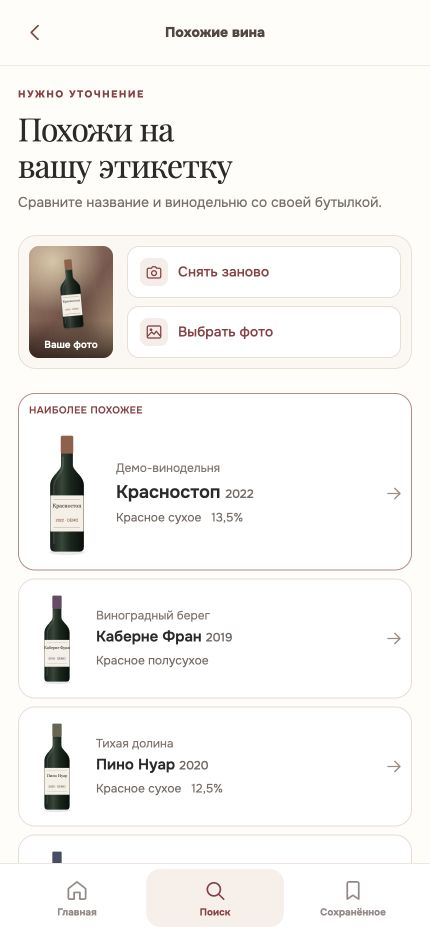

Нашли похожие вина
Выбранный вариант. Разговорный тон и понятный результат без обещания точного совпадения.
Универсальный заголовок, крупные иконки и более живая сцена ожидания. Ниже — реальные снимки обеих версий при 430 × 932. Смена винных заметок видна в живом макете ожидания ↗.


«Нашли похожие вина» подходит и для бутылки, и для другого фото. Подзаголовок стал короче. Справа от исходного снимка — две крупные иконки: снять новое фото и выбрать из галереи. Кнопки 56 × 56, пиктограммы 32 px. Белые карточки и винный контур лидера сохранены.
Vivino и PictureThis используют знакомую пару галерея / съёмка. Это экраны камеры: расположение рядом с нашим исходным снимком — собственная адаптация. Понятность двух иконок ещё стоит проверить на пользователях; узнаваемость нельзя доказать одним чужим скриншотом.


Сохранили доступные названия, заметный отклик и полноценные области касания. Apple HIG — Buttons ↗ · Полный разбор ↗
Снимок снова слегка наклонён и расположен под сценой с псом. Справа — заметка шрифтом Playfair: мягко исчезает и сменяется следующей раз в 8 секунд. Это короткие пересказы проверенных фактов, не приписанные знаменитостям цитаты. Пауза доступна рядом с «О вине»; при сокращении движения заметка статична.
Белое вино тоже можно сделать из тёмного винограда.
WSET · цвет вина ↗Пузырьки шампанского рождаются при втором брожении в бутылке.
Comité Champagne ↗Красное вино обычно получает цвет от кожицы винограда.
WSET · цвет вина ↗Дубовая бочка может подарить вину аромат ванили.
WSET · дубовые бочки ↗Оранжевому вину цвет даёт кожица белого винограда.
WSET · оранжевое вино ↗Ленту случайных марок пока не выбрали: она могла бы выглядеть как реальные промежуточные результаты. Заметки добавляют характер, а отдельная строка «Поиск ещё идёт» честно показывает состояние.
Посмотреть смену заметок в макете ↗25.09 · v3.3. Убрали привязку выдачи к этикетке и лишние подписи действий; увеличили иконки. Вернули наклонённый снимок ниже маскота, добавили пять проверенных заметок с плавной сменой и паузой. Основание — замечания Макса о тексте и формальной композиции.
Исследование и сравнение v3.2 · Кликабельная v3.2 · Кликабельная v3.1
Проверка вёрстки: основной размер 430 × 932; дополнительно iPhone-классы 402/440 и Android-классы 360/412 CSS px. Это браузерный прототип, без подключения камеры или распознавания. Рабочее приложение не менялось.